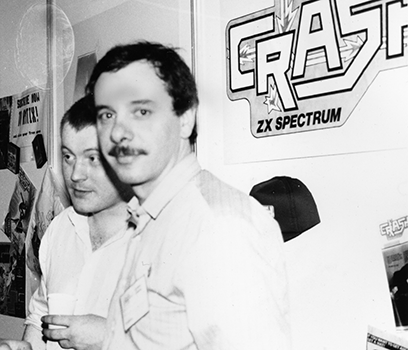

I had been partners with Oliver Frey for some years, doing book packaging, graphic design and free-lance writing various magazine articles. Then in 1982, Oliver's brother Franco upgraded to a ZX-81, and I got the computer bug. Or, at least, the desire to program little squares that moved around the screen when I told them to (it must have been the control-freak in me).
Inevitably that led to Franco buying a Spectrum. He had an electronics business contact in Germany, who wanted to purchase Spectrum games, as they were not available in Germany at the time. Because the few early games were also not widely available in British shops, Franco thought a mail order business would work well, and the three of us started Crash Micro Games Action mail order in early 1983. I wrote detailed reviews of each game and Oliver illustrated a regular newsprint brochure. We advertised it in those magazines on sale -- Computer & Video Games, Sinclair User, Personal Computer News and one or two others.
C&VG and Sinclair User, oddly, received less response than the general mags, but most were poor at reviews, and we thought we could do so much better.
A magazine distributor happened to see a copy of one of our brochures at an Ally Pally tradefair and said: "If you were to do a full-scale magazine like that, I could get it distributed. And so CRASH was born. The first issue was intended to go on sale in November 1983, to catch the pre-Christmas trade, but the vicissitudes of the newstrade led to wrangles with WH Smith, who didn't want any more shelf space used up by the fledgling computer mags before Christmas. In the end, CRASH #1 went on sale on 13 January 1984.
I had almost no professional journalists to rely on -- and the few I knew by reputation, I didn't rate -- so I ended up writing most of the first three issues with the help of a few local kids who had been popping in to buy games direct. In fact that became CRASH's strength. We built a reputation for solid reviews by using up to three "reviewers" drawn from a pool of 15 or so -- all at Ludlow School. They were, after all, the target market, and they had a far less sentimental attitude to the games being reviewed than the London-based professionals under the thumb of an advertisement manager.
It was Franco Frey who first bought a Spectrum -- an incredible 16K ! We plugged it into my TV, waited 5 or 6 minutes for the cassette to load and played Melbourne House's DEFENDER. I became an expert, if I say so myself. Two days later, he walked in with JETPAC, and I thought computer games were really on their way.
It's hard today to explain just how exciting the Spectrum was: colour, sound (er, sort of) and, with Jetpac anyway, great speed. It was the first time I had sat in front of a telly and been in control of what happened on the screen. That's a very liberating experience for someone with a detestation of much of television output.
I didn't really leave the Spectrum scene, it sort of left me. CRASH became immensely successful in its first year, and that meant adding to the tiny company. It meant having advertisement managers, assistant editors, layout artists, production managers, etc, and I wasn't able to continue full-time editing CRASH. In 1985 I relinquished the magazine to others and concentrated on the inevitable launch of a second title -- ZZAP!64 for the Commodore 64.
That was also a success, and Newsfield Ltd, as we had become, needed more launches, which meant more staff (70 by 1986), and I ended up more of a manager than an editor.
Nevertheless, through all the years I maintained CRASH until it was finally sold for a song to EMAP in 1992. It was a sensible business decision, but I was sad at the time.
Indirectly, I am still in the computer games business. That is to say, Prima Creative Services creates strategy guides for Prima Publishing, our parent company in California. However, we also package illustrated books for Virgin, Carlton, Topps Europe (Merlin), Parragon Publishing and many other international clients. In effect, I run the company in England.
The person who is actually responsible for doing the computer games books is Nick Roberts. Nick joined Newsfield while still at Ludlow School. I think he was 15, and approached me by saying Robin Candy was getting tired as Tips editor (Robin was just 16 at the time), and that he, Nick, could do a better job. As it turned out, Robin wanted to move onto more creative writing, so Nick got the chance. Nick stayed with Newsfield, and then Impact Magazines, and became an editor, before doing a stint at Paragon (not to be confused with Parragon, above).
Prima Creative Services employs many of the old Newsfield crew. Along with myself, Oliver and Franco, Matthew Uffindell (co-writer of CRASH #1 and 2, later production manager for the company; Matthew was 17 when he started), Carol Parkinson (formerly Kinsey, who ran mail order/subscriptions), her husband, Michael Parkinson who runs our scanning department (and used to be screens photographer in the pre-Mac days), Jo Lewis (now a designer, who started in Newsfield's Ad dept), Ian and Charlie Chubb (designers, who started life at Newsfield as process camera operators, converting game screens to usable bromides for the layout artists to stick down).
We create the majority of football sticker collections and albums for Topps/Merlin, such as KICK-OFF, PREMIER LEAGUE 98, as well as other entertainment subjects. We produced the official ENGLAND, HISTORY OF THE F.A. for Virgin and the VIRGIN FOOTBALL RECORDS. We have just completed PRINCE NASEEM: LORD OF THE RING for Parragon, and put to bed last week SUPERSTARS OF THE WORLD CUP.
The best things about the Speccy -- it had a lot going for it. Its price made it affordable, and the games were inexpensive (despite the continual "hard-earned cash" moans!). I think it challenged games designers because, compared to much bigger machines, they had so little space into which the game code had to go. At one point, I would have backed the cleverness of a Speccy games designer against any university graduate working for ICL or IBM.
The worst things -- well, I guess the keyboard was a joke, but we sort of loved it anyway. The early 48K Spectrums made it difficult for peripheral manufacturers to do much, so joysticks were always a headache. Fortunately, Sinclair made it easier later on. At first I think Sinclair wanted total control, with no third parties butting in, but then realised he was only holding back the machine.
And the sound...?
Just about everything from Ultimate Play The Game. Their company name was no boast. The Stamper brothers were way ahead of the game. Not only did they manage to create large, fast and decorative sprites, but -- with few exceptions -- the gameplay was brilliant. And, as Rare, they're still knockin' them dead with games like GOLDEN EYE. I'm sure there were others, but time, you know...
As above, the Stampers. Then there was Derek Brewster, who also wrote CRASH's Adventure Line for a while, but who was such a great guy. But the person who I most admired, and came to know reasonably well, was Matthew Smith (JET SET WILLY). He created a game that took platformers to a height rarely achieved since, and in essence made later and much better looking games like SONIC possible to conceive.
It's difficult to split coders and artists apart for much of the Speccy's run, simply because most did both. As for musicians, I can't recall thinking there was anything that wonderful on the Spectrum.
At the risk of upsetting loads of good people, I had no real favourite Speccy journalists. I have to admit that my favourites were ZZAP!64 people: Gary Penn, Gary Liddon and Julian Rignall. Yes, I know they all came from Newsfield, but they went on to other companies and magazines. Gary Penn was so dedicated to the computer games business and also to running a good magazine. Julian learned his trade thoroughly at Newsfield and later put it to stunning use at EMAP. Gary Liddon was one of the funniest writers around -- the hard part was to make sure his copy was well edited in order to avoid furious parents and libel writs.
Unfortunately, I don't have the time, although many people at PCS can be found at odd moments playing on the Mac with an emulator. Only a week before Christmas I was invited to show my prowess at DEFENDER again. Not too bad, but QWRT/ASDF skills were very poor!
They did their job as they saw fit.
Of course Lloyd Mangram existed. He was as real as anyone -- the paper bag is still in a special case in the Ludlow Museum.
I'm probably as nostalgic as anyone, but I can't see the point in living in a "golden age" when everything seemed better, and therefore I consider most of the modern games I see as better, in some senses, than older Speccy games. Obviously, with bags of memory, CDs, 8-channel sound, etc, modern games look infinitely better, and can often rest with that, forgetting gameplay. What I would say is that few recent games have significantly improved on the playability and cleverness of the best of Speccy games. But then, there's very little new under the sun (and other assorted clichés).
Also, it's like with music. For a generation that were unborn when some bands were having great hits, current covers sound like the real thing, whether in truth they're better or worse than the original. I think you would find it hard to persuade a 14-year-old Playstation gamer to give up his machine for a Spectrum...?
The sense of pioneering something new, a bit dangerous. I miss the notion that we were pirates firing broadsides at the then-giant magazine publishers, and winning because we knew what the market needed, and they didn't.
Otherwise, I am very content with my life now, and I DON'T miss the continual stress of financial pressure, when every day (for over a year, anyway) I thought the bank or the printer would close us down!
The original Newsfield premises in Ludlow town (CRASH TOWERS, indeed) were on four floors with a wide Georgian-style staircase. I can't remember who instituted it, but rubber-band fights became so lethal up and down the stairs, usually between different departments, that the postmen refused to come into the building. Although a regular participant, I had to put a stop to it when Robin Candy's desk drawer was found crammed to overflowing with thousands of bands, and no one ever had one when they needed it.
As Newsfield's staff grew a bit, we recruited people from out of town. For most it was their first away from home job, so they were hopeless (no names) at fixing themselves up with a place to stay. Fortunately, just four doors up the road was a very nice Mr Onions, who had a very large, several-bedroomed flat for rent. The company took it, so we had place for some of the reviewers to live. Needless to say, they hardly ever kept in decent condition, but the nice Mr Onions rarely bothered us, until one day he got his own back by insisting I meet his son Andy, who he said was a Spectrum games programmer.
Groan...
However, Tank Duel really was worth getting excited about, so fortunately we were able to satisfy nice Mr Onions and Onions Jnr. at the same time -- and they didn't even book an advert.
Sad Bastards?
No, seriously, if it turns you on, do it. I am often amazed to find our computer games writers, surrounded by wired up N64s, Playstations, PCs, a specially-constructed coin-op so we can play beta boards of Midway's MORTAL KOMBAT "n" for a book, sitting on their Macs playing JETPAC on emulator. One of our writers, Simon Hill -- probably one of the world's best arcade players -- limbers up with the keyboard controls of JET SET WILLY.
Thanks to Roger for doing the interview.
Interview composed, conducted and edited by Philip Bee.